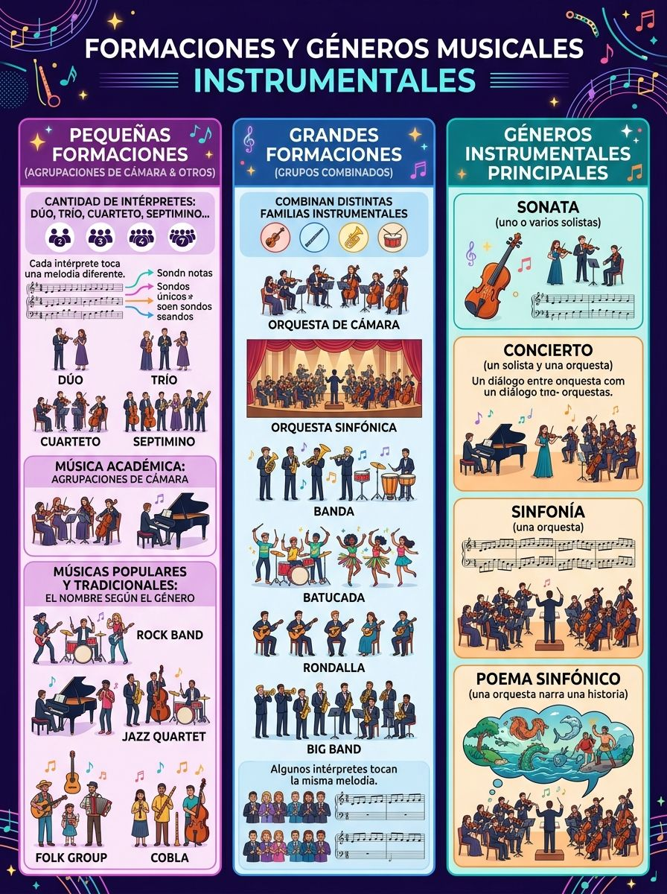

Diccionario
Diccionario
Completar contenido
👥 1. Las pequeñas formaciones musicales
Las pequeñas formaciones están compuestas por pocos músicos. En estas pequeñas agrupaciones, cada intérprete toca una melodía diferente. Tienen características según el estilo:
🏛️ Música académica (Agrupaciones de cámara): Reciben su nombre según la cantidad de intérpretes:
2️⃣ Dúo (2 músicos)
3️⃣ Trío (3 músicos)
4️⃣ Cuarteto (4 músicos)
7️⃣ Septimino (7 músicos)
🎸 Músicas populares y tradicionales: Su nombre se relaciona directamente con el género musical que interpretan (por ejemplo: banda de rock 🎸, grupo de jazz 🎷, conjunto folk 🪕).
🏛️ 2. Las grandes formaciones musicales
Las grandes formaciones combinan instrumentos de distintas familias (cuerda, viento y percusión) para conseguir un sonido rico y potente. A diferencia de los grupos pequeños, en las grandes formaciones algunos intérpretes tocan la misma melodía al mismo tiempo.
- 🎻 Orquesta de cámara: Formación reducida de orquesta.
- 🎼 Orquesta sinfónica: Gran formación con todos los instrumentos de viento, cuerda y percusión.
- 🎺 Banda: Agrupación compuesta principalmente por instrumentos de viento y percusión.
- 🥁 Batucada: Grupo de percusión con ritmo festivo de origen afrobrasileño.
- 🪕 Rondalla: Agrupación formada por instrumentos de cuerda pulsada (guitarras, laúdes, bandurrias).
- 🎷 Big band: Gran orquesta característica de la música de jazz.
📜 3. Los géneros instrumentales
Un género instrumental es la forma de estructurar o componer la música sin voz humana:
- 🎹 Sonata: Obra escrita para uno o varios solistas.
- 🎻 Concierto: Obra en la que dialogan un solista y una orquesta.
- 🏛️ Sinfonía: Obra escrita para toda una orquesta.
- 📖 Poema sinfónico: Obra instrumental donde una orquesta narra una historia, poema o leyenda a través de la música.
Infografía

Cuestionario adaptativo
Elige la respuesta correcta para cada pregunta. Para subir al siguiente nivel debes responder correctamente dos preguntas seguidas. Si fallas dos seguidas, bajarás al nivel anterior.